HOGWARTS SCHOOL OF WITCHCRAFT AND WIZARDRY
호그와트 기숙사 컵 사용자 가이드
비판적 사고 퀴즈 «House Cup»의 참가자 화면과 관리자 화면 사용법을 화면 이미지와 함께 설명합니다.
참가자는 문제마다 정답과 함께 확신도를 걸고, 그 점수가 기숙사 점수로 모입니다.
1. 한눈에 보기
화면은 참가자 화면과 관리자 화면 두 가지입니다. 참가자가 답을 낼 때마다 점수가 바로 저장되고, 모든 화면의 점수와 순위가 새로고침 없이 함께 바뀝니다.
접속 주소
| 화면 | 주소 | 누가 쓰나요 |
|---|---|---|
| 참가자 화면 | https://ucanon.com/jmp/hogwarts/ | 학생. 로그인 없이 바로 참여 |
| 관리자 화면 | https://ucanon.com/jmp/hogwarts/admin.html | 등록된 관리자. Google 계정으로 로그인 |
두 화면은 서로 이어져 있습니다. 관리자 화면 오른쪽 위 퀴즈 화면을 누르면 참가자 화면으로, 참가자 화면 오른쪽 위 관리자를 누르면 관리자 화면으로 갑니다.
진행 순서
점수 규칙
문제마다 정답을 고르고, 그 답이 맞을 확률을 다섯 단계 중 하나로 고릅니다. 맞히면 확신도만큼 얻고, 틀리면 확신도만큼 잃습니다.
| 확신도 | 정답일 때 | 오답일 때 | 이럴 때 고르세요 |
|---|---|---|---|
| 95% | +95 | −95 | 거의 확실할 때 |
| 75% | +75 | −75 | 꽤 자신 있을 때 |
| 60% | +60 | −60 | 조금 더 맞을 것 같을 때 |
| 45% | +45 | −45 | 반반에 가까울 때 |
| 30% | +30 | −30 | 거의 모를 때 |
기숙사 점수는 그 기숙사를 고른 참가자들의 개인 점수를 모두 더한 값입니다. 무작정 높은 확신도를 고르기보다 자기 실력을 정확히 가늠하는 것이 기숙사에 유리합니다.
2. 참가자 화면
학생이 쓰는 화면입니다. 로그인 없이 이름과 기숙사만 고르면 바로 시작합니다.
첫 화면
기숙사 컵과 대회 규칙을 소개합니다. 안내를 읽고 아래의 기숙사 배정식 시작 버튼을 누릅니다.
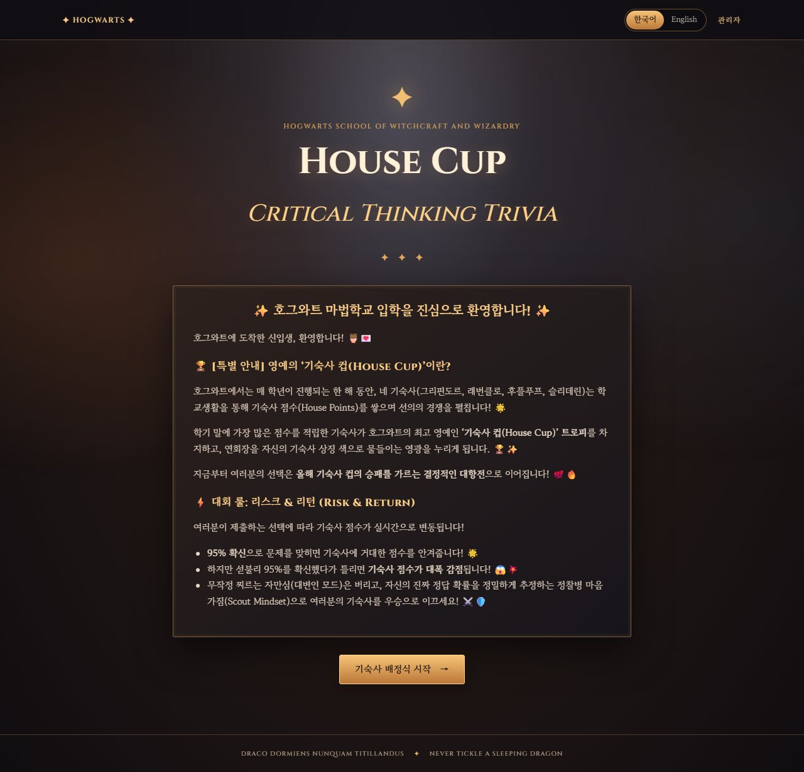
이름 입력
순위표에 보일 이름을 30자 이내로 입력하고 계속을 누릅니다. 이름은 다른 참가자에게도 보이므로 별명이나 이름만 쓰는 것이 좋습니다.
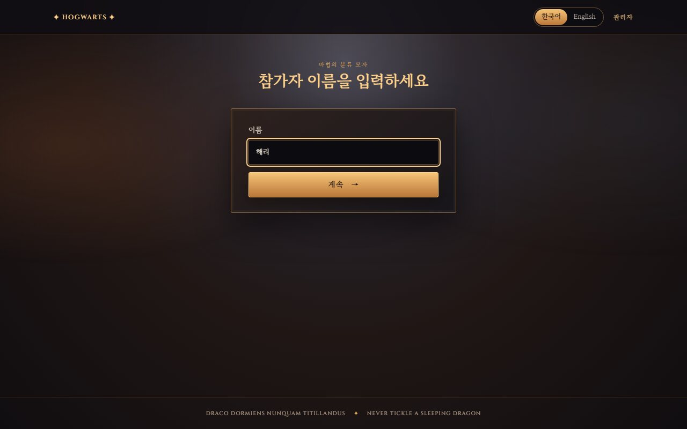
기숙사 선택
네 기숙사의 특징을 읽고 대표할 기숙사를 누릅니다. 누르는 즉시 첫 문제로 넘어갑니다.
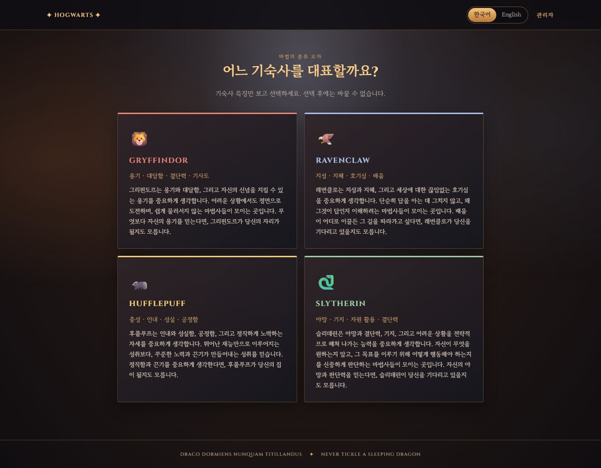
문제 화면 구성
문제 화면 위쪽에는 진행 상황과 점수가 늘 보입니다.
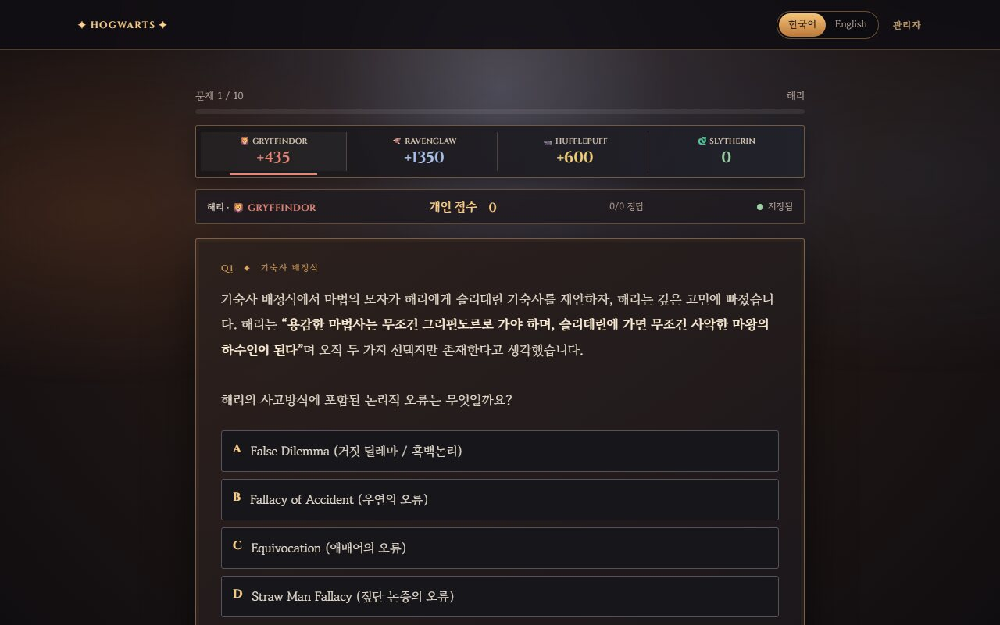
| 영역 | 설명 |
|---|---|
| 진행 막대 | 몇 번째 문제인지(예: 문제 1 / 10)와 진행 정도를 보여 줍니다. |
| 기숙사 점수 띠 | 네 기숙사의 현재 점수입니다. 내 기숙사 칸 아래에 색 밑줄이 있고, 다른 참가자가 답을 내면 바로 바뀌며 바뀐 숫자가 살짝 커졌다 돌아옵니다. |
| 개인 점수 띠 | 내 이름·기숙사, 개인 점수, 맞힌 수, 현재 순위를 보여 줍니다. |
| 저장 상태 | 초록 점과 저장됨이면 지금까지의 답이 모두 저장된 상태입니다. 제출 중에는 저장 중, 문제가 생기면 빨간 점과 저장 실패가 보입니다. |
답과 확신도 고르기
- 문제를 읽고 A~D 중 답을 하나 누릅니다. 고른 답은 금색 테두리로 표시됩니다.
- 정답 확신도에서 다섯 단계 중 하나를 누릅니다. 각 버튼 아래에 얻거나 잃는 점수가 적혀 있습니다.
- 답과 확신도를 모두 고르면 답안 제출 버튼이 켜집니다. 누르면 바로 저장됩니다.
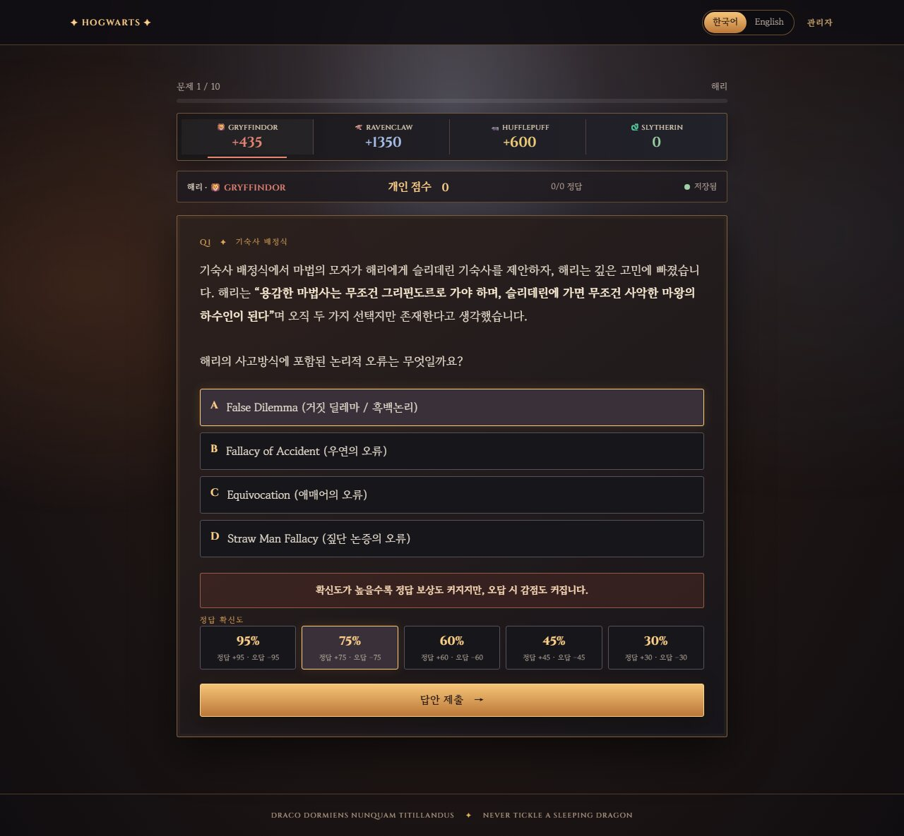
문항별 결과
제출하면 곧바로 그 문제의 결과가 나옵니다.
- 정답! 또는 오답과 함께 내가 고른 답과 실제 정답을 나란히 보여 줍니다.
- 이번 문제 점수는 이 문제로 얻거나 잃은 점수입니다(초록은 득점, 빨강은 감점).
- 그 아래에 개인 누적 점수, 맞힌 수, 현재 순위가 나옵니다.
- 전체 기숙사 점수와 참가자 순위(상위 10명과 나)는 실시간으로 바뀝니다. 내 줄은 갈색으로 강조됩니다.
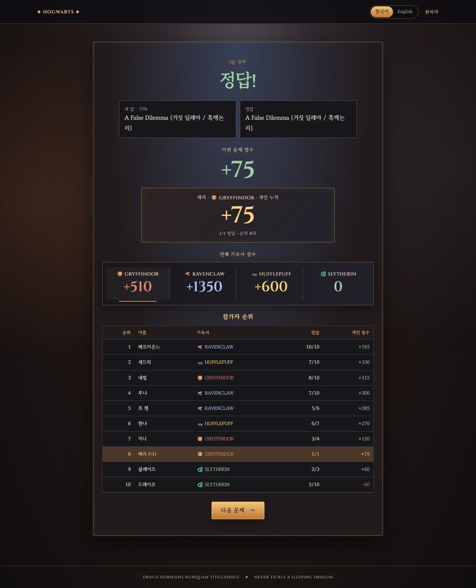
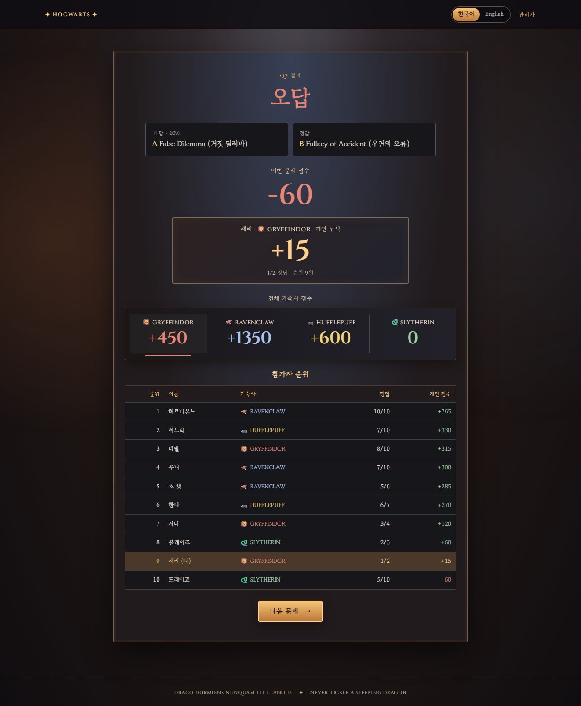
다음 문제를 누르면 이어서 풉니다. 마지막 문제 뒤에는 버튼이 결과 보기로 바뀝니다.
최종 결과
10문항을 모두 풀면 최종 결과가 나옵니다. 개인 누적 점수와 순위, 기숙사 점수, 내가 낸 답 10개의 정리표, 전체 참가자 순위를 보여 줍니다. 다른 참가자가 계속 풀고 있으면 기숙사 점수와 순위는 이 화면에서도 계속 바뀝니다.
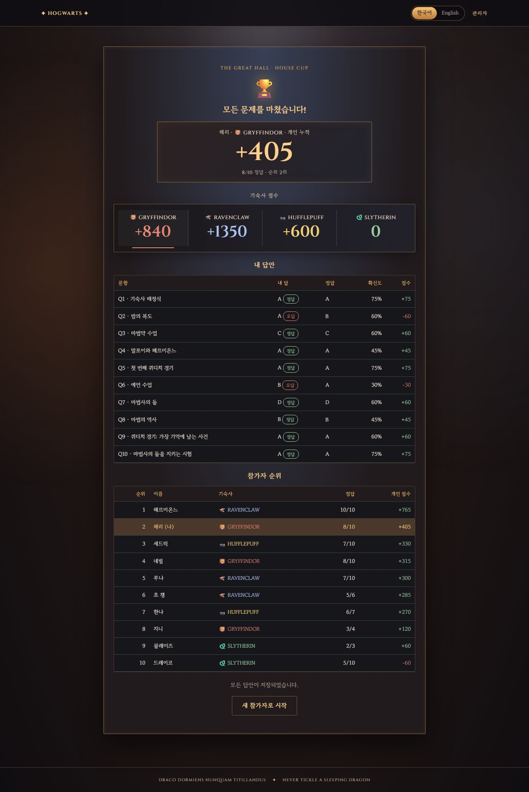
언어 바꾸기
오른쪽 위 한국어 · English에서 원하는 언어를 누릅니다. 지금 선택된 언어가 금색 바탕으로 표시되며, 문제·선택지·안내가 모두 바뀝니다. 고른 언어는 다음에 들어와도 유지됩니다. 언어를 바꿔도 푼 기록과 점수는 그대로입니다.
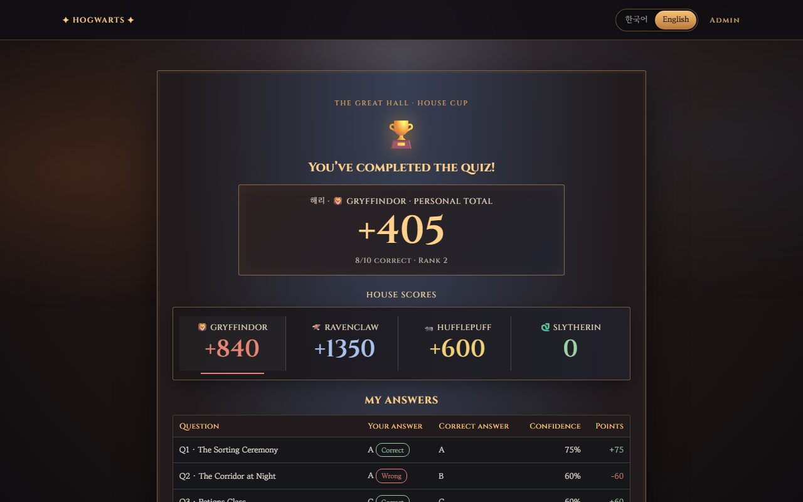
이어서 풀기와 새 참가자
풀던 도중 창을 닫았다가 다시 들어오면 풀던 문제부터 바로 이어집니다. 왼쪽 위 ✦ HOGWARTS ✦ 로고를 누르면 첫 화면으로 가며, 여기서 두 가지를 고를 수 있습니다.
- 이어서 풀기 / 내 결과 보기: 내 기록으로 돌아갑니다.
- 새 참가자로 시작: 한 기기를 여러 학생이 돌려 쓸 때 사용합니다. 앞사람 기록은 그대로 저장되어 있고, 새 이름으로 처음부터 시작합니다.
휴대폰에서
휴대폰에서도 같은 주소로 들어오면 화면이 폭에 맞게 정리됩니다. 기숙사 점수와 개인 점수는 문제 위에 늘 보입니다.
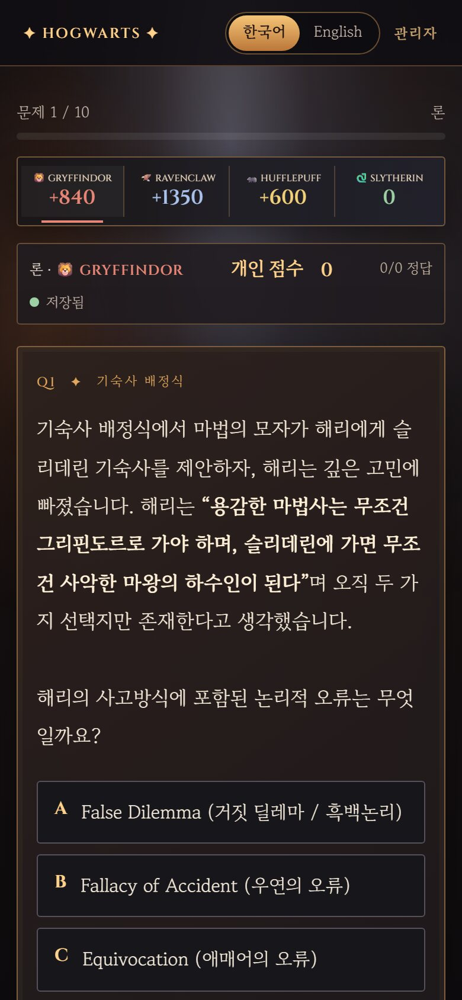
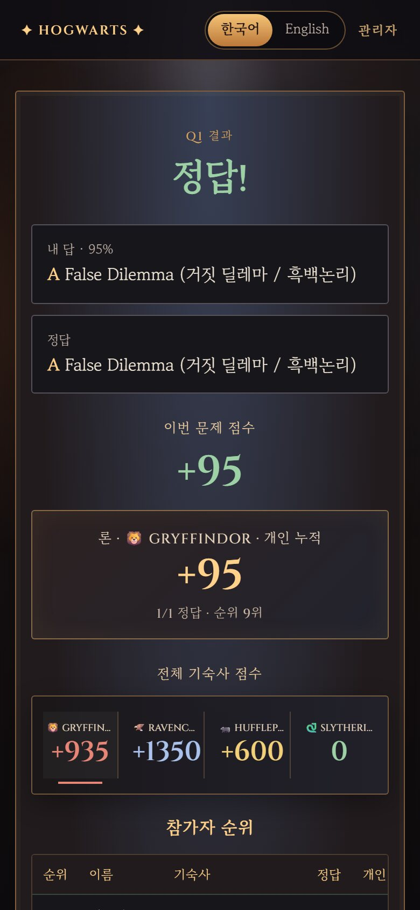
3. 관리자 화면
진행자가 실시간 결과를 보고 기록을 관리하는 화면입니다. 그래프와 표는 답안이 들어올 때마다 자동으로 다시 계산되므로 새로고침할 필요가 없습니다.
접속과 로그인
- 관리자 화면에 들어갑니다.
- Google 계정으로 로그인을 누르고, 뜨는 창에서 관리자로 등록된 Google 계정을 고릅니다.
- 로그인되면 바로 대시보드가 열립니다. 한 번 로그인하면 같은 브라우저에서는 다음에도 로그인이 유지됩니다.
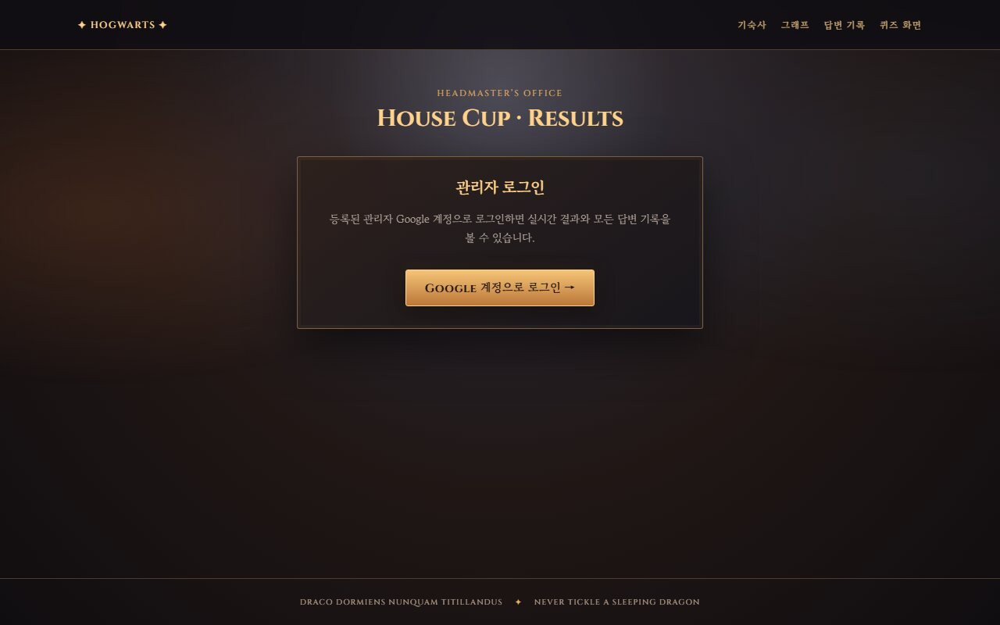
권한이 없을 때
관리자로 등록되지 않은 Google 계정으로 로그인하면 아래 화면이 나옵니다. 다른 계정으로 로그인을 눌러 등록된 계정으로 다시 로그인합니다. 관리자 추가는 Firebase 콘솔의 admins 컬렉션에서 합니다(4장 참고).
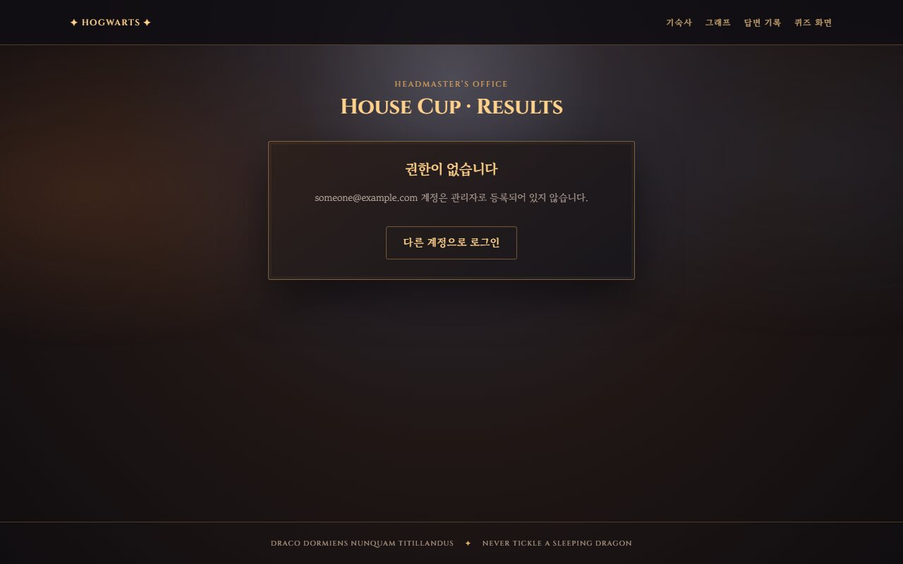
상단 막대와 게임 ID
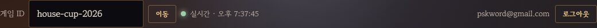
| 항목 | 설명 |
|---|---|
| 게임 ID | 지금 보고 있는 회차입니다. 기본값은 house-cup-2026입니다. 다른 회차를 보려면 ID를 입력하고 이동을 누릅니다. |
| 실시간 표시 | 초록 점과 실시간 · 시각이 보이면 연결된 상태이며, 시각은 마지막으로 데이터가 바뀐 때입니다. 빨간 점이면 연결이 끊긴 것이니 새로고침합니다. |
| 계정·로그아웃 | 로그인한 관리자 계정과 로그아웃 버튼입니다. |
맨 위 메뉴의 기숙사, 그래프, 답변 기록을 누르면 해당 영역으로 바로 이동합니다.
요약 지표
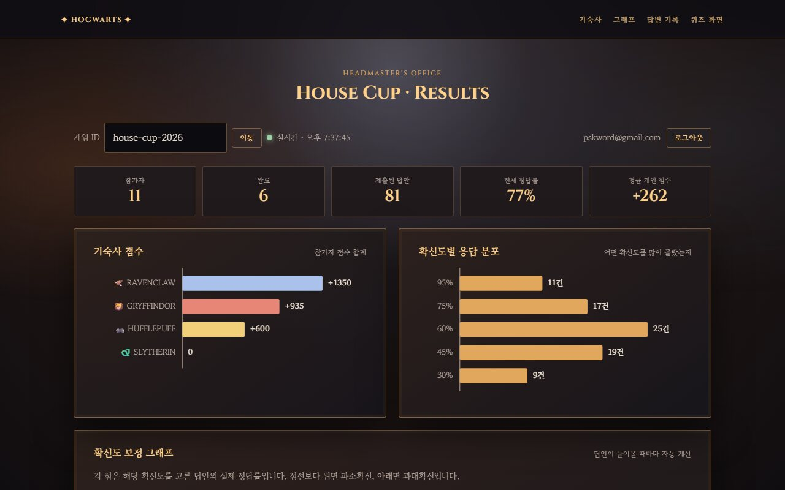
| 지표 | 뜻 |
|---|---|
| 참가자 | 첫 답을 제출한 참가자 수 |
| 완료 | 10문항을 모두 푼 참가자 수 |
| 제출된 답안 | 지금까지 저장된 답의 총 개수 |
| 전체 정답률 | 모든 답 가운데 맞힌 답의 비율 |
| 평균 개인 점수 | 참가자 개인 점수의 평균 |
기숙사 점수와 확신도 분포
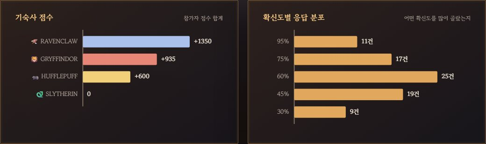
- 기숙사 점수: 높은 순으로 정렬되며 막대 색은 기숙사 색입니다. 점수가 음수면 막대가 왼쪽으로 그려집니다. 막대에 마우스를 올리면 참가 인원이 보입니다.
- 확신도별 응답 분포: 학생들이 어떤 확신도를 얼마나 골랐는지 보여 줍니다. 95%에 몰려 있으면 지나친 자신감을, 30%에 몰려 있으면 소극적인 태도를 짐작할 수 있습니다.
확신도 보정 그래프
이 퀴즈의 핵심 과제 그래프입니다. 각 확신도를 고른 답이 실제로 얼마나 맞았는지 자동으로 계산해 보여 줍니다.
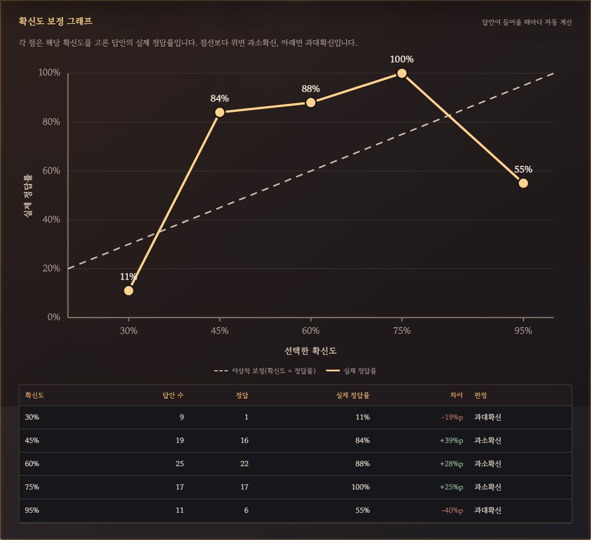
- 가로축은 학생이 고른 확신도, 세로축은 그 답들의 실제 정답률입니다.
- 점선은 이상적인 보정(확신도 = 정답률)입니다. 75%를 골랐다면 실제로도 75% 정도 맞아야 잘 보정된 것입니다.
- 점이 점선보다 위에 있으면 실제보다 자신을 낮게 본 것(과소확신), 아래에 있으면 높게 본 것(과대확신)입니다.
- 아래 표의 차이는 실제 정답률에서 확신도를 뺀 값입니다. ±10%p 안이면 잘 맞음으로 판정합니다.
문항별 정답률
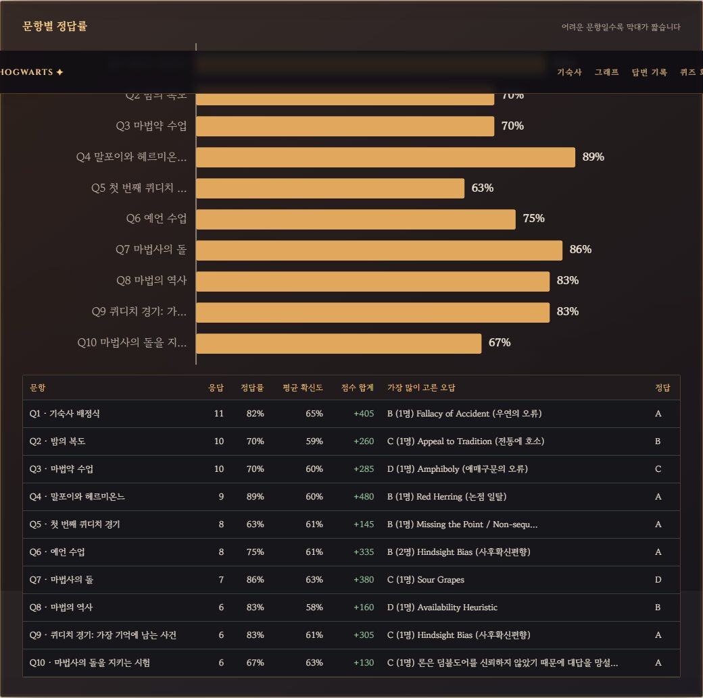
막대가 짧을수록 어려운 문항입니다. 아래 표에서 문항별 응답 수, 정답률, 평균 확신도, 점수 합계를 보고, 가장 많이 고른 오답으로 학생들이 어떤 개념을 헷갈렸는지 확인할 수 있습니다.
참가자 순위와 삭제
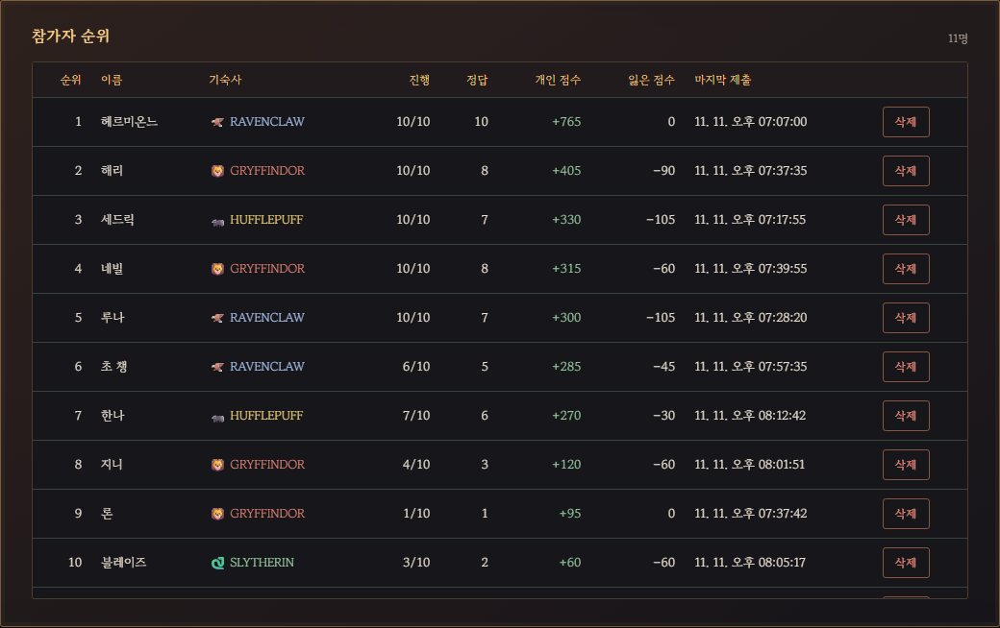
- 진행은 푼 문항 수입니다. 10/10이 아니면 아직 푸는 중입니다.
- 잃은 점수는 틀린 문제에서 잃은 점수의 합입니다. 확신도를 무리하게 고른 참가자를 찾을 때 씁니다.
- 삭제를 누르고 확인하면 그 참가자와 답안이 모두 지워집니다. 장난스러운 이름이나 잘못 들어온 기록을 정리할 때 씁니다. 지운 기록은 되돌릴 수 없고, 해당 학생 화면에는 “관리자가 이 참가 기록을 삭제했습니다”가 표시됩니다.
모든 답변 기록
제출된 모든 답을 최신순으로 보여 줍니다. 누가 언제 어떤 답을 어떤 확신도로 냈는지 한 줄씩 확인할 수 있습니다.
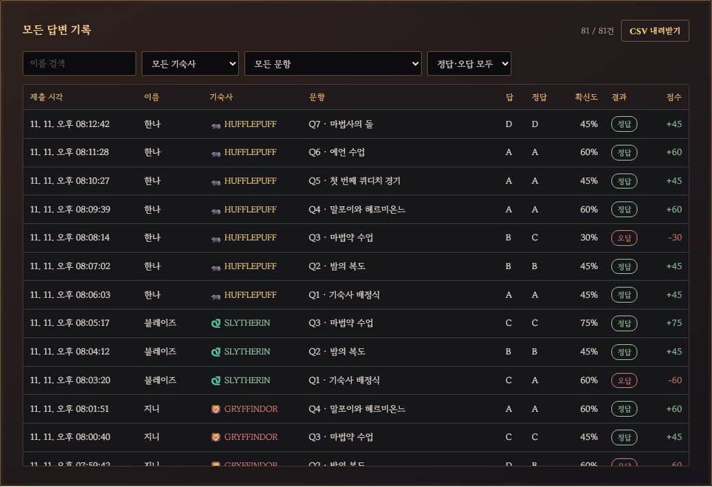
위쪽 필터로 원하는 기록만 볼 수 있습니다. 필터는 함께 적용되며, 오른쪽 위에 보이는 건수 / 전체 건수가 표시됩니다.
| 필터 | 예시 |
|---|---|
| 이름 검색 | 이름 일부를 입력하면 그 참가자의 답만 봅니다. |
| 기숙사 | 특정 기숙사 참가자의 답만 봅니다. |
| 문항 | Q1~Q10 중 한 문항의 답만 봅니다. |
| 정답·오답 | 맞힌 답 또는 틀린 답만 봅니다. |
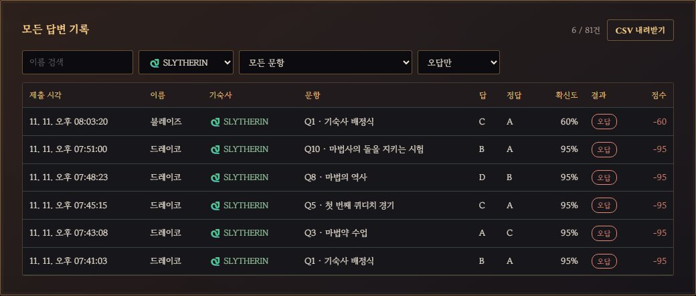
CSV 내려받기를 누르면 지금 필터가 적용된 기록을 엑셀에서 열 수 있는 파일로 저장합니다. 제출 시각(한국 시간), 이름, 기숙사, 문항과 제목, 고른 답과 그 내용, 정답, 확신도, 결과, 점수가 들어 있습니다.
참가자별 전체 답안
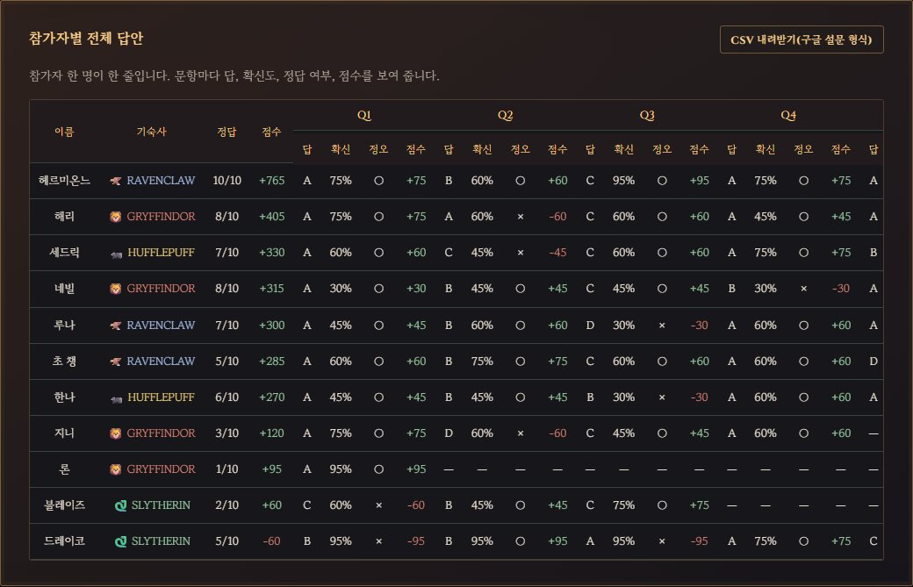
참가자 한 명이 한 줄이고, 문항마다 답·확신도·정오(○/×)·점수를 보여 줍니다. 표가 넓으므로 옆으로 밀어서 봅니다. CSV 내려받기(구글 설문 형식)는 구글 설문 응답처럼 한 사람 한 줄 형식으로 저장합니다.
데이터 정리
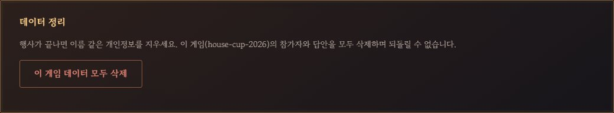
행사가 끝나면 필요한 CSV를 먼저 내려받고, 이 게임 데이터 모두 삭제로 참가자 이름과 답안을 지웁니다. 실수로 지우지 않도록 확인 창에 게임 ID를 그대로 입력해야 삭제됩니다. 지운 데이터는 되돌릴 수 없습니다.
4. 운영 안내
회차(게임 ID) 나누기
반이나 날짜별로 따로 겨루려면 주소 끝에 ?game=회차ID를 붙여 공유합니다. 회차 ID는 영문 소문자, 숫자, 하이픈으로 40자 이내입니다.
| 용도 | 주소 예시 |
|---|---|
| 참가자(1반) | https://ucanon.com/jmp/hogwarts/?game=class-1 |
| 관리자(1반) | https://ucanon.com/jmp/hogwarts/admin.html?game=class-1 |
회차마다 점수와 순위, 기록이 완전히 따로 쌓입니다. 관리자 화면에서는 게임 ID 칸에 입력해 바꿔 볼 수도 있습니다.
행사 전 점검
1. 관리자 화면에 로그인해 초록색 실시간 표시를 확인합니다.
2. 시험용 회차(예: ?game=test)로 한 문제를 풀어 보고 기록에 뜨는지 봅니다.
3. 시험 회차 데이터를 삭제하고, 실제 회차 주소를 준비합니다.
행사 후 정리
1. 확신도 보정 그래프와 문항별 정답률로 수업을 마무리합니다.
2. 두 가지 CSV를 내려받아 보관합니다.
3. 이 게임 데이터 모두 삭제로 이름과 기록을 지웁니다.
관리자 추가
Firebase 콘솔(프로젝트 ucanon-hogwarts)의 Firestore에서 admins 컬렉션에 새 관리자의 Google 이메일을 문서 ID로 추가합니다. 필드는 아무것이나 하나 있으면 됩니다. 자세한 절차는 저장소의 docs/setup.md에 있습니다.
5. 자주 묻는 질문
‘저장 실패 · 다시 시도’가 떠요.
인터넷 연결이 잠시 끊긴 경우입니다. 연결을 확인한 뒤 같은 버튼을 다시 누르세요. 앞선 제출이 이미 저장되었다면 서버 기록을 그대로 이어받으므로 점수가 두 번 들어가지 않습니다.
화면이 이상하거나 ‘… is not a function’ 같은 오류가 나요.
사이트가 막 업데이트되어 브라우저에 옛 파일이 남은 경우입니다. Ctrl+Shift+R(Mac은 Cmd+Shift+R)로 강력 새로고침을 한 번 하세요. 휴대폰은 브라우저를 완전히 닫았다가 다시 엽니다.
관리자 로그인 창이 열리지 않아요.
팝업 차단 때문입니다. 브라우저에서 이 사이트의 팝업을 허용하거나, 카카오톡·인스타그램 등 앱 안 브라우저가 아니라 Chrome·Safari로 직접 여세요.
한 대의 태블릿을 여러 학생이 돌려 써도 되나요?
됩니다. 한 학생이 끝나면 로고를 눌러 첫 화면으로 가서 새 참가자로 시작을 누르세요. 앞 학생의 기록은 그대로 남습니다.
‘관리자가 이 참가 기록을 삭제했습니다’라고 나와요.
관리자가 그 참가자를 삭제한 경우입니다. 아래의 새 참가자로 시작을 눌러 다시 참여하면 됩니다.
기숙사를 잘못 골랐어요.
기숙사는 바꿀 수 없습니다. 새 참가자로 다시 시작하고, 관리자에게 이전 기록 삭제를 요청하세요.
다른 사람이 내 점수를 바꿀 수 있나요?
없습니다. 각 참가자는 자기 기록에만 답을 추가할 수 있고, 문항 순서대로 한 번씩만 제출됩니다. 점수는 제출한 답과 확신도로만 계산되며, 다른 사람의 답 기록은 관리자만 볼 수 있습니다.